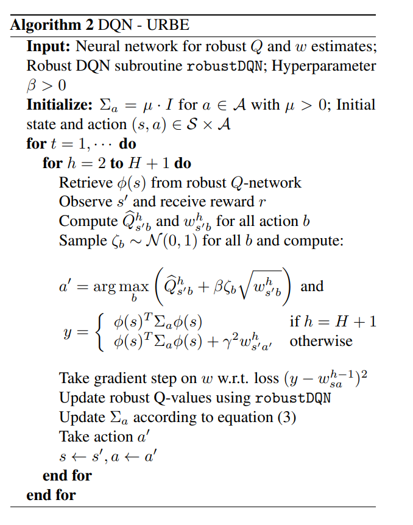
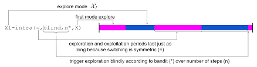
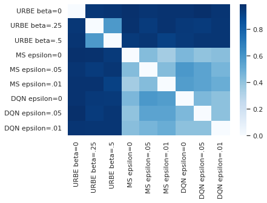
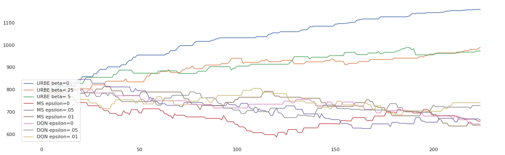

Introduction
In finding the optimal way to accomplish a task, one needs to explore their options in some way. We can state the problem of exploration (POE) as follows:
How do we gather enough facts such that we can obtain the most probable conclusion?
Accordingly, the only way to develop confidence in predicting the most likely conclusion is to exploit the information we already have. For example, if you want to find the most efficient way to walk to the closest bus station from your house, you likely would prefer the route with the main streets and pathways you have previously taken (especially in the absence of a map on your phone GPS). However, the most efficient way is not necessarily the most familiar. This dilemma is known as the Exploitation vs. Exploration problem. Difficult to solve and solutions might be mostly domain specific.

My aim in this post is to argue in favor of a bayesian treatment of POE. Specifically, I argue that Bayesian Reinforcement learning is the best solution to probabilistic environments, where experience is conditional on random events. Namely, probabilistic environments such as the board game Backgammon are too unpredictable for some agents to adequately solve, as any board position depends on a sequence of preceding rolls of two six-sided dice. Indeed, solving simulated probabilistic environments is much more interesting than using their deterministic counterparts as real-life decision-making often relies on non-deterministic factors.
I begin my investigation by articulating the Bayesian paradigm for reinforcement learning and recently proposed variants. Then, I briefly describe the recent work published by the company Deepmind directly addressing POE. Finally, we compare the performance of the two methodologies and demonstrate the superiority of the proposed bayesian methods in the experiments section.
The Bayesian Approach - Robust DQN
Although not as popular as the out-of-the-box approaches such as DQN, bayesian RL techniques can perform extremely well despite their extra theoretical baggage. There are many ways one can possibly include prior information in the RL framework, however here we will only look at works that add prior knowledge over the parameters $\theta$ with distribution $p(\theta)$. In the paper "Deep Robust Kalman Filter" Shashua & Mannor (2017) modified the DQN framework by incorporating information from the uncertainty in state transitions. The authors introduce their methods by defining the maximum a-posteriori (MAP) estimator of $\theta$ given a dataset of observations $O$ is given by:
Recall the opbective function, the squared nominal Bell TD error at a given time step $t$
where above $o$ is the environment obervation, $p$ is a network policy, $\theta^{\prime}$ is old model parameters, and we exclude the time index $t$ for clarity. Under this new Baysian paradigm the functional parameters in the above loss are given by:
where $r$ is the reward at time step $t$, $\gamma$ is the discount hyperparameter and $\tilde{S}$ is all the possible states the we could arrive at if we tried every single possible action at this current state $s$. At a high level, $\delta$ is the same advantage as in the DQN case however much more work has to be done to understand the robust network targets $y_{\theta^{\prime}}^{\text{robust}}$. The authors has this to say:
It looks for worst case transitions that may reduce the value of the expected Q-function, and sets the robust target label value according to the minimal expectation. In return, the agent that receives these robust target labels, learns how to act optimally over these transitions.
when talking about the targets $y_{\theta^{\prime}}^{\text{robust}}$. Using this as the loss agents are subsequently more robust and less overconfident as they explicitly account for a worst-case when training.
Baysian methods in recent leturature seem to be very effective in preventing overconfidence. Indeed, Hein et. al. (2019) highlight the overconfidence problem found in neural nets commonly used in RL. More concretely Hein et. al. (2019) prove:
Where $\mathbf{x}$ is a datum, $f$ is a neural net and, $\delta > 0$ and $i\in \{1, .., k\}$ are real numbers. In plain-english the above equation suggests that if $\delta\mathbf{x}$ is far enough away (from the training distribution of $f$) then a typical neural network will become overconfident, predicting a probability of 1 for the $i^{th}$ class. Subsequently, a year later Kristiadi et. al. (2020) argue that under some settings, bayesian methods can address overfitting in their paper fittingly named: “Being Bayesian, Even Just a Bit, Fixes Overconfidence in ReLU Networks”.
In the vein of trying to be a little bayesian Derman et. al. (2019) proposed a bayesian approach to DQN. Their work is mainly based on the framework of Shashua \& Mannor (2017). The worst-case is explicitly defined in the loss in addition to a newly derived distribution over the Q-values and the incorporation of dynamic programming. We will only use this bayesian method and compare it against all the other non-bayesian methods later on in this post.
DQN - URBE
Here we will go into some details about the very unique components in the algorithim in Derman et. al. (2019). named "DQN - Uncertainty Robust Bellman Equation" (DQN - URBE). We will explain some of the motivations of parts and the algorithim in just enough detail to make implementation easier. Then we will provide the peudocode at the end of this section.
Let $p_{sa}^{h}$ where the ith element is the probability that we arrive at a next new state $s^{\prime}_{i}$ taking action $a$ in state $s$, where $p_{sa}^{h}$ is not necessarily constant size. Then let us define a prior on these probabilities:
for $\varphi_{sa}$ is a vecor of priors over the transition probabilities $p_{sa}$ and $\mathbb{F}_{t}$ is descried as:
as a minimal sigma-algebra that contains all of the available information up to episode t (e.g. all observed states, actions and rewards).
then the ith element of $n_{sa}^{h}$ can be though as the count of sucessful agents that transition to the state $s^{\prime}_{i}$ from state $s$ for $h\leq t$. Note, we are assuming we have perfect informtion $\mathbb{F}_{t}$, hence if we have a dataset of known transitions and outcomes (gathered through self-play, expert examples, ect.) that can approximate $\mathbb{F}_{t}$ then we can define a posterior over the $p_{sa}^{h}$ that we will define as $\widehat{p_{sa}^{h}}$. An important quantity here is $w:=1/n_{sa}^{h}$ given its roll in the posterior variance given by:
where the derivation of which is of course found in the paper. To go into any further detail would require an understanding of the bellman equation and its solutions which is beyond the scope of if this post. Nonetheless, given the above upper bound of the variance, the authors postulate a posterior distribution over the robust dqn values $\bar{Q}$ as:
which is done using the Baysian Central Limit Theorem which necessitates that the posterior distribution converges to a Gaussian distribution. Hence we have the theoretical intuition that: the q-values are normally distributed under certain smoothness assumptions such that its distribution is dependent on $w=1/n_{sa}^{h}$. This intuition leads us finally to the URBE algorithm.
Where the update to $\sum_{a}$ is given by the Sherman-Morrison-Woodbury formula: $\sum_{a}^{next}:=\sum_{a}-(\sum_{a}\phi \phi^{T})/(1+\phi^{T}\sum_{a}\phi)$, where $\phi$ is the output vector of a hidden layer of a neural net of the active agent seperate from the q-value and the policy outuputs.
DQN-URBE agents are robust explorers. By probalistically sampling actions from the distribution of Q-values, DQN-URBE agents use the network's uncertanty of the current state as a tool for action selection, which leads to exploration. Additionaly, DQN-URBE also uses Robust-DQN to regularise the Q-values which leads to robust action sampling. Unlike the case of paring epsilon-greedy and DQN, the underlying assumptions of the of URBE and robust-DQN are compatible. Namely, URBE difines an estimate for the Q-values produced by a DQN (and hence robust-DQN) network. Where epsilon-greedy is often applied without full consideration of how it changes the underlying assumptions of various frameworks, given its popularity.
Bandit Exploration - A Less Greedy Approach
In the paper “When Should Agents Explore?” Pislar et. al. (2022) demonstrate that agents can perform better when a designated time period for exploration. Periods can occur multiple times per episode and can be independent of the states themselves. Moreover, mechanisms independent of the tasks or goals of the agent can trigger an exploratory period. The authors propose a couple of such triggers, albeit for only a fixed number of steps. One such trigger only activates if the discrepancy between the predicted values of past states is much higher compared to the value of the present state. Such a discrepancy suggests that the current state is unexpected by the agent in past time steps. Hence, exploring the current state as much as possible is reasonable as the agent is in unfamiliar territory. However, the best-performing exploration trigger was a “non-stationary multi-armed bandit” approach where the triggering of an exploratory period is probabilistically determined based on the number of steps after the last exploratory period. During such, actions are picked uniformly at random throughout the entirety of the period.
Here will only focus on the aforementioned “non-stationary multi-armed bandit” approach as it is as it often yields the best results, simple to implement, and is relevant to our discussion of exploration. As this approach focuses on the ‘when’ of exploration but does not consider the behavior of the system during exploration. Thus, the approach is still considered somewhat myopic as once the agent is in exploration mode, the actions are selected uniformly at random. From now on we will refer to this approach as “mode switching” or MS.
Experiments
We compare the three techniques: the bayesian approach (DQN-URBE), the probabilistic bandit approach (MS), and epsilon greedy (DQN). All three generate their own training data through self-play and optimize for the probability of winning. All agents use the original DQN framework with exception of DQN-URBE (whose training algo given above) for 300000 updates to the neural network over a total of 180000 games of Backgammon. The results of which are shown below: 
Above is the heatmap of the winning probabilities in every 1-to-1 matchup. In the frameworks that select random actions with a probability parameter $\epsilon$ (i.e. MS and DQN) we included an agent with a different value for $\epsilon$. Similarly, for DQN-URBE we include a different agent for a different value of $\beta$, which controls the strength of the white noise applied to the q-values at infference time.
Often In 1-vs-1 games like chess and tennis, a numerical rating system or "elo" is used as an objective measure of skill that can predict the best player in a match-up even if the players have not competed before. Aside from just reporting the winning probabilities, I found it more interesting to develop an elo for each of the agents. Indeed, using an elo system gives a better sense of which agents are similar in strength and gives a better sense of which are the best and worst. 
The above elo’s were plotted over 200 games time using the elo system typically used in chess. Games were between two randomly selected agents where each agent’s elo was initialized at 800. From this we can observe very clear groups emerging. By far the best model is DQN-URBE with $\beta =0$ even though $\beta =.5$ for all DQN-URBE when producing training data during self-play. DQN-URBE agents with any other value for $\beta$ greater than 0 play with similar elo / strength. All other agents’ elo are grouped together at the bottom.
Conclusion
When faced with a new board position, exploration is key. Trying new moves is key to finding the most robust actions in environments that involve a high degree of randomness like in games of backgammon. Here we introduced Robust-DQN which tries to directly introduce robustness to the worst possible outcome. In addition, we introduced DQN-URBE, an extension to the Robust-DQN framework, that can take advantage of a network's uncertainty about a position and make Robust-DQN less conservative. Finally, we introduced the MS approach to exploration, which argues for the need for "exploration periods" during training. However, the base framework for all these mentioned methods: DQN, does not directly look more than 1-2 moves into the future of the position. DQN instead relies on Q-values to estimate all future possible outcomes from a given action, which sounds absurd in games with dice. Hence, future work could focus on methods that could directly observe many possible future positions like in Alpha-Zero or even MU-Zero. (foreshadowing)
References
[3] Shashua, S.D., & Mannor, S. (2017). Deep Robust Kalman Filter. ArXiv, abs/1703.02310.